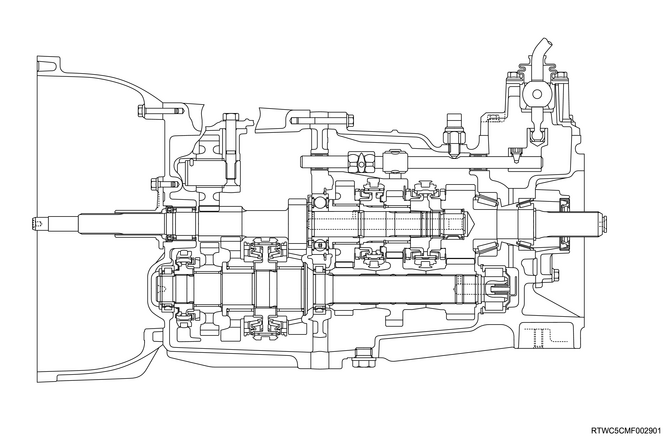

Note

MUX5S transmission is a constant mesh type transmission and synchronized at all speeds. This transmission is designed to achieve lower operating force and quietness.
Main components of this transmission consist of the clutch housing, front case, intermediate plate, rear case, end cover assembly and gear, and the transmission control box is located inside the transmission.
Note
The clutch assembly consists of a clutch pressure plate, a clutch cover, a diaphragm spring drive pin and clutch disc.
The clutch pedal is connected to the release bearing assembly via the shift fork.
The clutch disc is installed between the flywheel and clutch pressure plate.
A push-type clutch is adopted in this transmission.
When the clutch pedal is pressed, the shift fork moves toward the release bearing assembly.
By the release bearing assembly, diaphragm overcomes the force of the diaphragm spring and the clutch disc is released from the flywheel and clutch pressure plate to disengage the clutch.
Note
The master cylinder converts mechanical energy into the oil pressure energy.
When the clutch pedal is pressed, the push rod moves toward the piston to close the return port.
The clutch fluid is forced to discharge from the master cylinder.
When the clutch pedal is released, the return spring returns the piston to its original position.
The return port opens and the clutch fluid returns to the fluid reservoir.
When the clutch pedal is released quickly, the fluid pressure on the return spring side becomes lower than the fluid pressure on the push rod side.
As a result, fluid pressure on the push rod side rapidly flows into the return spring side through the port within the piston head.
Then the pressure on both sides of the piston becomes equal.
Note
The slave cylinder converts oil pressure energy into mechanical energy.
The slave cylinder is moved by the oil pressure supplied from the master cylinder to operate the shift fork.
The mechanical energy generated by the slave cylinder is directly proportional to the master cylinder and slave cylinder diameters.
An air bleeding screw is provided for air bleeding of the slave cylinder.
The clutch damper valve slows clutch fluid returning speed to reduce the shock torque transmitted to the drive train when the clutch is rapidly engaged at "Low" or "Reverse".
Note
The oil pressure damper cylinder is installed between the master cylinder and the slave cylinder to equalize variations in the clutch pedal feeling.
Note
The orifice valve reduces shock input to the drive system generated by rapid engagement of the clutch pedal, such as sideways disengagement of the clutch pedal, by narrowing the clutch hydraulic pressure path.
Note
The pressure plate assembly consists of a pressure plate with a diaphragm spring.
When the clutch pedal is operated, the pressure plate moves in an axial direction to engage/disengage with the clutch.
Note
The clutch disc consists of a plate and a facing.
The plate consists of a clutch center, a cushioning plate and a torsion spring.
The facing is secured with rivets to both sides of the cushioning plate.
The cushioning plate minimizes wear and vibration of the clutch contact surface, which prolongs the service life.